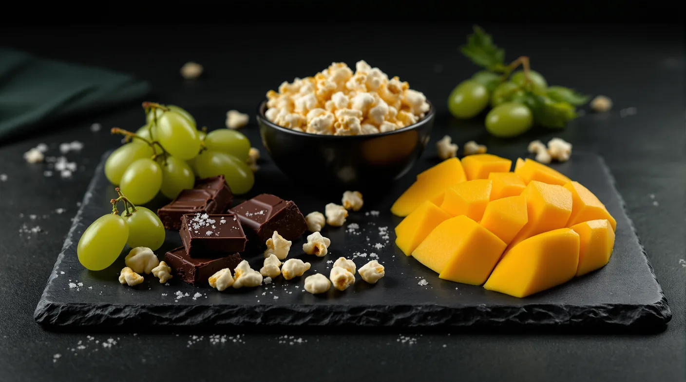

The Munchies Explained, Plus Terpene-Inspired Snack Pairings
The munchies have a real basis in brain science. Here is what research shows, what it does not, and a terpene-inspired snack menu to plan ahead with.

Key takeaways
- In a classic lab study, smoked cannabis raised daily calorie intake by about 40%, almost all of it from extra snacking.
- Animal studies point to two mechanisms: hunger signals in the hypothalamus and a sharper sense of smell.
- THCV is sometimes promoted as appetite-curbing, but the human evidence is thin.
- The idea that mango strengthens a high is unproven, so pair snacks for flavor, not effects.
- Prep snacks ahead, portion them out, and stay away from the stove and sharp knives while you're high.
What are the munchies? They're the familiar urge to snack, often on something sweet, after using cannabis. The cannabis munchies are real: studies in people and animals show THC can increase eating, partly through hunger signals in the brain and a sharper sense of smell. Here's the science in plain terms, a terpene-inspired snack menu and tips for snacking smarter and staying safe in the kitchen.
What are the munchies, and why does cannabis make you hungry?
The human evidence
One of the clearest human studies is also one of the oldest. In 1988, researchers at Johns Hopkins had six adult men live in a residential lab for 13 days while every bite was recorded. On days they smoked active cannabis, their total daily calorie intake rose by 40%.
Almost all of that came from snacking. The men didn't eat bigger meals; they snacked more often, and sweet solid snacks such as candy bars led the increase. The study was small, and its cannabis held just 2.3% THC, far weaker than most of today's flower.
Hunger signals in the brain
THC acts mainly on CB1 receptors, which help the brain regulate eating. A 2015 study in mice found that activating CB1 receptors made even well-fed mice eat more, and it worked through a surprising route.
The receptors switched on a group of hypothalamic neurons that normally signal fullness. Instead of their usual "you've had enough" message, those neurons released beta-endorphin, one of the body's own opioid-like chemicals. When the researchers blocked opioid receptors, the extra eating stopped.
Smell and taste
A 2014 study in fasted mice found that CB1 receptors in the brain's smell circuits made the animals better at detecting odors, and they ate more as a result. The authors linked the feeling of hunger to stronger odor processing.
Smell drives much of what we experience as flavor, which may help explain why food can seem so appealing when you're high. Keep in mind that most of this mechanism research comes from animals, so the details in people are still being worked out.
Putting it together
THC appears to nudge appetite through more than one route. Hunger signals can switch on even after a meal, food smells more inviting, and in the human study the urge showed up as extra snacks rather than bigger meals. That makes the munchies predictable enough to plan for, which is where the rest of this guide comes in.
Do some cannabinoids blunt appetite? THCV claims and their limits
THCV (tetrahydrocannabivarin) is a cannabinoid sometimes promoted as appetite-curbing. The evidence is thinner than the marketing.
In a 2009 mouse study, pure THCV reduced eating and weight gain. A THCV-rich cannabis extract didn't, possibly because of the THC it also contained.
Human evidence is small. In one study, 20 healthy volunteers took a single 10 mg dose of THCV and, on another day, a placebo. Their ratings of how pleasant chocolate was, and how much they wanted it, didn't change, though brain scans showed shifts in how they responded to food cues.
That's a long way from showing that a THCV product will curb your appetite or change your weight, so don't count on one to do either.
A terpene-inspired snack pairing menu
Terpenes are the aroma compounds behind cannabis's citrus, pine, pepper and floral notes. Terpene food pairing, matching a snack to a strain's aroma, is a fun way to plan ahead. In one cell study, six common cannabis terpenes didn't activate the body's main cannabinoid receptors or change how THC acted there. Think of pairings as taste, not a way to change your high.
| Terpene | Aroma notes | Snack idea |
|---|---|---|
| Caryophyllene | Peppery, woody | Spiced nuts or a mug of chai |
| Limonene | Lemon and orange peel | Lemon bars, citrus sorbet or orange slices |
| Myrcene | Earthy, herbal | Mango slices, for taste only |
| Pinene | Pine, fresh herbs | Rosemary flatbread |
| Linalool | Floral, lavender-like | Honey on toast or lavender shortbread |
| Terpinolene | Fresh, herbal, lightly fruity | Crisp green apple slices |
A few notes on making each pairing work:
- Caryophyllene: a peppery, woody aroma suits warm spice. Spiced cashews or a chai latte echo it without competing.
- Limonene: citrus calls for something tart and bright. Lemon bars or chilled orange slices keep the palate fresh.
- Pinene: a resinous, pine-like scent sits well with savory herbs, so try rosemary flatbread or herbed popcorn.
- Linalool: floral and soft, it pairs with gentle sweetness, like honey on toast or a lavender shortbread cookie.
- Terpinolene: fresh and slightly fruity, it suits something crisp. Green apple slices with a little sharp cheddar are a good match.
Myrcene and the mango myth
You may have heard that eating a ripe mango before cannabis makes the high stronger, thanks to myrcene, an aroma compound the fruit is said to share with many strains. Call it folklore. It's unproven, and in a 2019 lab study, myrcene and five other common cannabis terpenes didn't activate cannabinoid receptors or change THC's activity at them.
Enjoy mango because it tastes good. Our terpene primer covers the basics.
A snack plan by format
How you consume cannabis changes when the munchies arrive, so plan your food around the format:
- A short vape or flower session: keep it light. A handful of nuts, some fruit or a small bowl of popcorn, set out before you start.
- Edibles: eat a real meal first, then set aside a snack for later in the evening. Edibles run on a slower clock than smoking.
- A longer evening: plan a small spread rather than a series of trips to the pantry.
- Throughout: keep water nearby and sip as you go.
Here's how an edible evening might look. Eat dinner at six, take a single low-dose serving at seven and set out a small plate of fruit and nuts for later. Give it at least two hours before deciding on more, and keep the rest of the snacks in the kitchen.
Healthier munchies: prep ahead, portion out
The 1988 study found that extra snacking, mostly sweet snacks, drove the increase, so planning ahead pays off. A few healthy munchies ideas:
- Build a plate before you start: cut fruit, veggies with hummus, cheese and whole-grain crackers, or a measured bag of popcorn.
- Portion it out. Take a bowl to the couch instead of the whole bag.
- Keep sweets small. A square or two of dark chocolate, frozen grapes or yogurt with berries.
- Close the kitchen. Put the rest of the food away once your plate is ready.
A few easy swaps keep the same comfort with smaller portions:
| Instead of | Try |
|---|---|
| A family-size bag of chips | A measured bowl of popcorn |
| A sleeve of cookies | Two squares of dark chocolate with berries |
| Ice cream from the carton | Yogurt with fruit and a drizzle of honey |
| A late-night drive for fast food | A cheese, cracker and fruit plate made ahead |
Wondering how to stop the munchies altogether? There's no reliable trick to switch them off, but planning helps. Eat a balanced meal beforehand, keep tempting snacks out of sight and decide in advance what you'll eat.
Kitchen safety when you're high
Being high and handling hot pans or sharp blades is a poor mix, so keep the kitchen simple:
- Skip the stove and oven. Cook before you use cannabis, or choose no-cook snacks.
- Put the sharp knives away. Slice fruit, cheese and bread in advance.
- Never leave anything heating unattended, including a toaster oven.
- Label infused food clearly and store it apart from regular snacks, somewhere children and pets can't get to it.
- Don't drive for snacks. Use what's on hand, or ask a sober friend.
No-cook ideas make this easy: hummus with sliced vegetables, a cheese board, overnight oats, trail mix you blended earlier or a bowl of frozen grapes.
Frequently asked questions
Why does weed make you hungry?
Mostly because THC acts on CB1 receptors that help regulate appetite. In mouse studies, activating those receptors switched on hunger signals in the hypothalamus and sharpened the sense of smell. In a classic human lab study, smoked cannabis raised daily calorie intake by about 40%, almost all of it from extra snacking.
How do you prevent the munchies?
There's no reliable way to switch them off, but planning helps. Eat a balanced meal before using cannabis, portion out a snack ahead of time and keep the rest out of sight. Keep water nearby. Don't count on THCV products to do the job, since evidence that they curb appetite in people is limited.
What snacks go well with cannabis?
Anything you've portioned out ahead of time works. For a flavor match, pair peppery strains with spiced nuts and citrusy ones with lemon bars or orange slices. Piney strains suit rosemary flatbread, and floral ones suit honey or lavender shortbread. Pairings are about taste, though; they won't change your high.
Why do I crave sweets when I'm high?
Research hasn't fully explained it, but the pattern is old. In a 1988 residential lab study, sweet solid snacks such as candy bars led the extra eating, ahead of soda and salty snacks like potato chips. If you know you reach for sweets, portion out a small amount ahead of time and keep the rest out of easy reach.
Does THCV reduce appetite?
The evidence in people is thin. Pure THCV reduced eating in a mouse study, but a THCV-rich cannabis extract didn't. In a small human study, a single 10 mg dose didn't change how much volunteers liked or wanted chocolate. That isn't enough to say a THCV product will curb your appetite.
Sources
- Foltin R.W., Fischman M.W., Byrne M.F., Effects of smoked marijuana on food intake and body weight of humans living in a residential laboratory, Appetite (1988) pubmed.ncbi.nlm.nih.gov
- Koch M. et al., Hypothalamic POMC neurons promote cannabinoid-induced feeding, Nature (2015) pubmed.ncbi.nlm.nih.gov
- Soria-Gomez E. et al., The endocannabinoid system controls food intake via olfactory processes, Nature Neuroscience (2014) pubmed.ncbi.nlm.nih.gov
- Riedel G. et al., Synthetic and plant-derived cannabinoid receptor antagonists show hypophagic properties in fasted and non-fasted mice, British Journal of Pharmacology (2009) pubmed.ncbi.nlm.nih.gov
- Tudge L. et al., Neural effects of cannabinoid CB1 neutral antagonist tetrahydrocannabivarin on food reward and aversion in healthy volunteers, International Journal of Neuropsychopharmacology (2014) pubmed.ncbi.nlm.nih.gov
- Santiago M. et al., Absence of entourage: terpenoids commonly found in Cannabis sativa do not modulate the functional activity of THC at human CB1 and CB2 receptors, Cannabis and Cannabinoid Research (2019) pubmed.ncbi.nlm.nih.gov
For adults 21 and older. Keep cannabis away from children and pets, and never drive after consuming. In New Jersey, cannabis smoking is allowed where cigarette smoking is permitted, unless stated otherwise.
1070 Springfield Ave Suite C, Irvington, NJ 07111